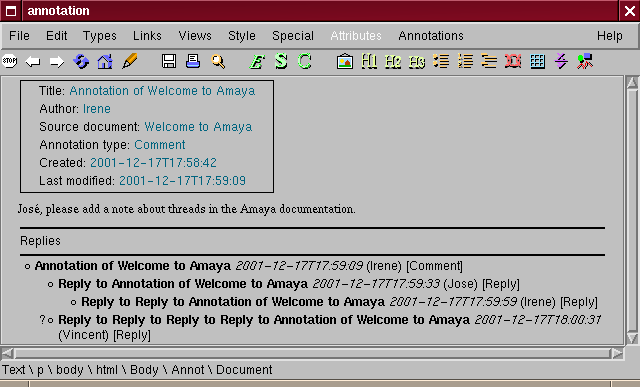

| |
|
Annotations can be seen as comments to pages. The Annotation / Replies feature enhances the collaborative workspace by allowing users to reply to annotations or to other replies.
The Annotations / Reply to annotation menu command lets you to create a reply to an existing annotation or to a reply. You can invoke this command from an open annotation or a reply window. As a result a new reply window opens. The fields in a reply window can be edited just like in an annotation window as explained under Creating an annotation.
When the reply is ready, you can post it to a server with Annotations / Post to Server menu command or save it locally using the File / Save menu command. To delete a reply, you can use the Annotations / Delete menu command.
Replies can also be annotated like any other document, as explained in Creating an annotation.

In the current user interface, all replies related to an annotation are shown at the bottom of this annotation, in a thread section. Each item in the thread gives the date of the reply, the author, and the title of the reply. The content of any of these replies can be retrieved by double clicking the replies in the thread. The selected reply will be highlighted and presented in a reply window. When another selection is made the same reply window is used.
There is no control yet for controlling which replies should be posted. In an ideal world, it should not be possible to save a reply to a reply if the previous reply was not saved in the same server. Likewise, if you delete a reply, you should delete all replies to this annotation. Not doing leads to having fragments of threads that cannot be correctly attached in the thread. For example, let R1 be the reply to annotation A1 and R2 a reply to R1. If you post R1, and let R2 be stored locally, then when you browse A1 and only download its local annotations, you will only see R2. At this point, Amaya does not know that R2 exists, so it assumes that R1 has lost its parent. We identify these "orphan" threads by putting a question mark symbol ? in front of them. If later one, Amaya finds new thread items, for example, if you download R1, Amaya will then sort the thread view, inserting the threads as appropriately. In our example, R2 will become a child of R1, as expected.